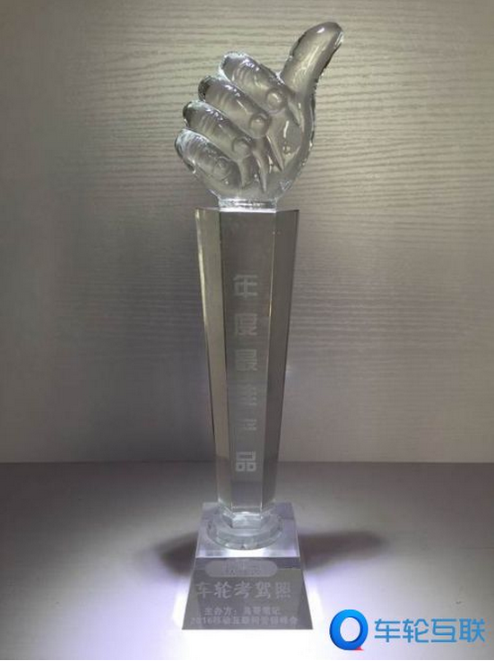

1月18日，由鸟哥笔记主办的“2016中国移动互联网营销峰会”在上海举办，在经过峰会评审委员会评审等系列评选程序后，车轮考驾照凭借在互联网+驾考等方面的突出表现，获得教育类“年度最佳产品”。
作为移动App推广、运营领域最具影响力的盛事，峰会吸引了产品经理、产品运营、App推广、商务BD等1000位移动互联网从业精英参与，会上回顾了2015年度最成功企业的营销策略，展望了2016年企业营销的趋势和方向，并从权威机构数据、用户认可度、分发量等各方面评选出2015年度最佳营销案例、产品、平台和公司奖。车轮考驾照的得奖，意味着首个互联网学车平台获得了业界及市场的双重肯定，能为车主用户提供真正有价值的驾考体验。
自2013年上线以来，车轮考驾照一直瞄准驾考市场学车难的痛点，致力于为学员提供最优质的驾考服务。2015年7月，车轮考驾照开始全面升级，进军驾考O2O，用互联网把学员、教练、驾校三个利益相关方连接起来，打破沟通藩篱，打造互联网+驾考的新模式。
自2013年上线以来，车轮考驾照一直瞄准驾考市场学车难的痛点，致力于为学员提供最优质的驾考服务。2015年7月，车轮考驾照开始全面升级，进军驾考O2O，用互联网把学员、教练、驾校三个利益相关方连接起来，打破沟通藩篱，打造互联网+驾考的新模式。